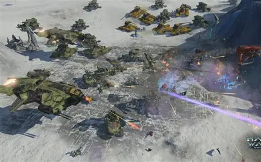

¿En qué consisten los juegos del genero táctico?
Los videojuegos de género táctico se centran en la planificación estratégica y la toma de decisiones cuidadosas, más que en la acción rápida.
A diferencia de los shooters o juegos de supervivencia, aquí el jugador debe pensar varios pasos adelante, como si estuviera en un tablero de ajedrez digital.
Características

Enfoque en estrategia: cada movimiento importa; no se trata de reflejos, sino de calcular riesgos y ventajas.
Gestión de recursos y unidades: el jugador controla personajes, tropas o escuadras, cada uno con habilidades específicas.
Alta dificultad y recompensa: suelen ser desafiantes, pero la satisfacción viene de ejecutar un plan que funciona.
Terreno y posicionamiento: el lugar donde colocas tus unidades puede cambiar el resultado de la batalla.
Ejemplos de esta categoria
Halo Wars: pertenece al género táctico, específicamente a la estrategia en tiempo real (RTS). A diferencia de los shooters como Halo: Combat Evolved, aquí el jugador no controla directamente a un soldado, sino que dirige ejércitos completos desde una vista aérea, gestionando recursos, bases y unidades en batallas estratégicas.
Star Wars Commander: Escoges un bando entre imperio y rebelion para experimentar estrategia móvil estilo “base builder”, con énfasis en gestión de recursos y ataques rápidos.
XCOM: el jugador dirige una organización militar secreta encargada de defender la Tierra de una invasión alienígena.
